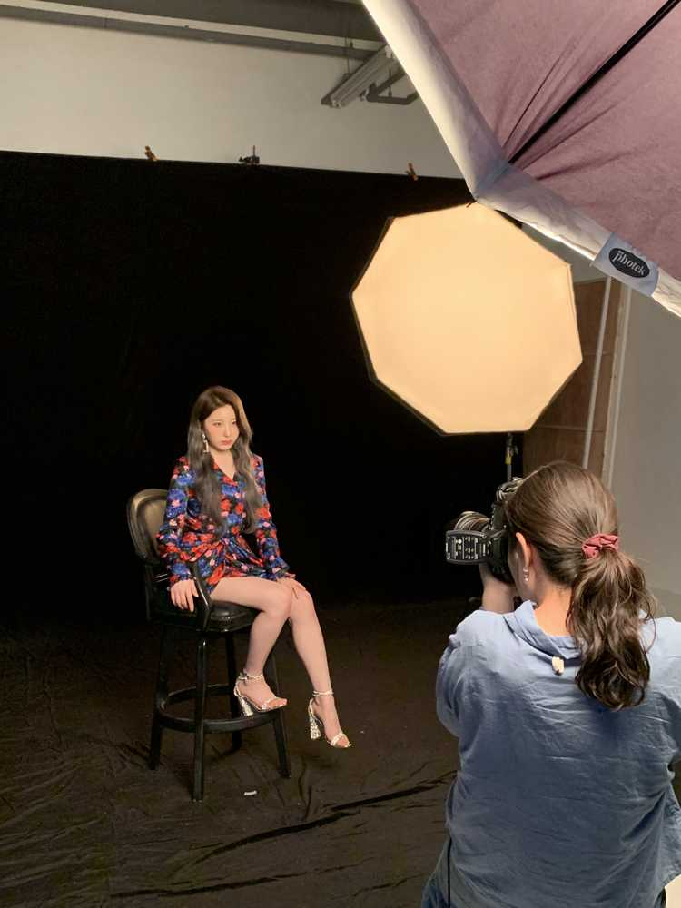
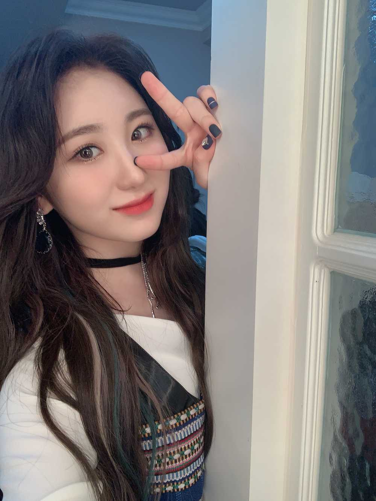
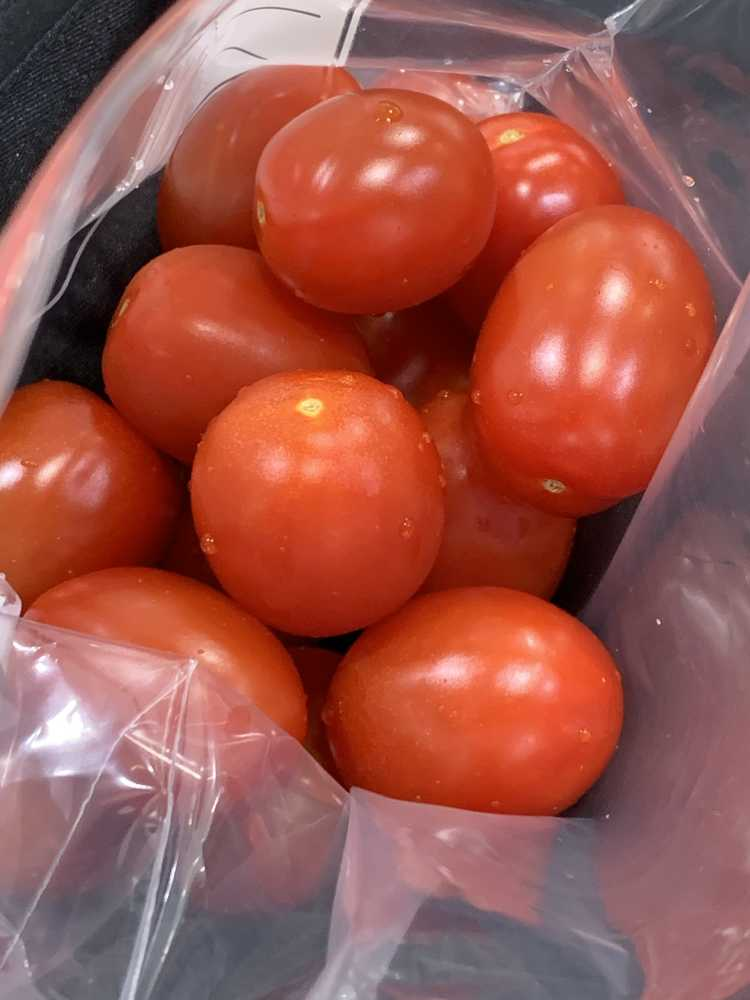

변함없이
저희 많이 사랑해주셔서 감사해요💕
늘 감사함 마음을 가지며 열심히 하고 있어요!!
멤버들끼리도 서로의 자존감 지킴이가 되기도 하고
서로서로 텐션을 끌어올려주기도 하고 있습니다~~~
'손을 잡아주고 있다'는 표현이 어울릴 것 같아요
So, Don't worry about it

오늘 새벽에 일어나자 마자 제가 한 일은요 ㅎㅎ
방울토마토 씻어서 나눠 담기
그리고 챙기기 !
대추토마토라서 그런가 달고 맛있었어요
크기도 커가지구 몇 개만 먹어도
배부르더라구요
역시 포만감과 수분까지 👍🏻간식으로 짱입니다!
이제까지 엄마가 씻어서 나눠놓으면 꺼내 먹었는데..
막상 숙소생활 하다보면
과일이나 야채같은 건 잘 못고르겠구
씻고 다듬는 게 번거롭긴 하더라구요 ㅎㅎ
근데 이제 알 것 같아요
빨갛고 물렁하지 않은
대.추.토.마.토🍅는 이제 잘 고를 수 있을 것 같아요ㅋㅋㅋㅋㅋㅋㅋㅋㅋ
오늘도 고생많았어요~~맛있는 저녁 드시구~~~~~
푹 쉬고
좋은 꿈꾸구요💕 언제나 사랑해요🌙미리 굿밤!⭐️
이따가 만나는 위즈원은 저녁 든든하게 드시구!!
조심히 오시요🤗 즐거운 시간 책임지겠습니다🙈